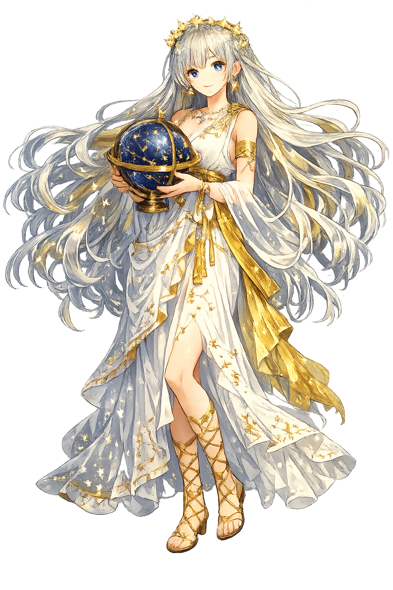

Unicode restoration and ASCII comparison
Οὐρανία
The name in its original Greek form. Ouranía (Οὐρανία) is attested in the source tradition — “Heavenly”. Its acute accents carry the full phonetic and orthographic weight of the source tradition.
ourania
Reduced to plain ourania, the name loses everything that made it specific: acute accents. What remains is an ASCII string that machines can parse but that no longer speaks with its original voice.
Ouranía
The Unicode restoration recovers what ASCII flattened. Ouranía restores acute accents, returning the name to its original written dignity. The domain encodes to Punycode, but the browser displays the truth.
Ouranía.com → xn--ourana-7va.com
The non-ASCII characters in Ouranía are encoded while the ASCII remains visible. To the DNS, it is Punycode. To humanity, it is Ouranía.
How Ouranía is preserved in writing
A bespoke provenance study for Ouranía is being prepared by the PUNICODEX scholarly team.
Contribute scholarly provenance →How Ouranía was spoken
Heavenly Song and the Starry Discipline
Ouranía is the Muse of astronomy and the heavenly sphere. While her sisters preside over history, comedy, and dance, she lifts the poet's eye to the stars. In Hellenistic and Roman art she appears with a celestial globe and compass, the patron of mathematics married to music.
She holds a sphere of the heavens, mapping constellations and the dance of planets.
Astronomy was geometry; her compass divides the circle into measured arcs.
The Pythagorean belief that the stars move to mathematical music she guards.
She inspires rulers to look upward and order earthly affairs by celestial law.
Stories of Ouranía
Ouranía's mythology is quiet but persistent. She is less a protagonist than a presence: the mind that turns the chaos of stars into cosmos.
Hesiod names Ouranía as one of the nine Muses born from Zeus and Mnēmosýnē, Memory. They were conceived in nine nights of union and born in nine days, each goddess receiving a province of the arts and sciences. Ouranía received the sky and the mathematical wonder it provokes.
In the Homeric Hymn to the Muses and in Roman poetry, Ouranía is invoked at the start of astronomical or philosophical poems. She is the one who can make number sing, who can translate the cold march of planets into verse worthy of the gods.
Some sources distinguish Aphrodítē Ouranía ('Heavenly Aphrodite') from Aphrodítē Pándēmos. The name Ouranía thus carries a philosophical charge: heavenly love, ordered and contemplative, set against the common love of the marketplace. The Muse and the goddess share a word for the same reason: both draw mortals toward what is above them.
Ouranía teaches an ancient discipline: look up. In an age of downward-glancing screens, her domain is a call to recalibrate. The stars do not need us, yet we have always needed them—for navigation, for calendar, for the sense that our small lives are part of a larger pattern.
Enter Extended Lore